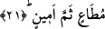

Bu âyet-i kerimede ruhun sıfatına işâret vardır. Çünkü ruhun, insanların diyarında
mevcut olan bütün hakikatler üzerinde saltanatı vardır.
Cebrâil’in bir başka vasfı, Arşın sâhibi olan Allah katında büyük bir makama ve
itibara sâhip olmasıdır. Burada “Arşın sâhibi”nden maksad, Allah’tır. Âyette Cenab-ı
Hak hakkında “Arşın sâhibi” ifâdesinin kullanılması, Allah’ın kibriyasının kalplerde ne
kadar ileri olduğuna işâret etmek içindir. Âyetteki “katında” anlamına gelen “inde”
kelimesi, “mekînun/itibarlı” kelimesinin zarfıdır. Buna göre âyetin mânâsı şöyledir: O
Cebrâil Allah katında yüksek bir itibara sâhiptir. Ancak bu kat mekan açısından değil,
Cebrâil’i şereflendirme ve ona ikram bahşetme açısındandır. Çünkü Allah Teâlâ mekan
vb. şeylerde bulunmaktan münezzehtir. Bu cümlenin bir benzeri şöyledir: Söz gelimi;
ben kalpleri kırık insanların yanındayım” desek, bu cümlede “yanında oluş” nasıl mekan
açısından değil de onlara ikram açısından ise âyette Cebrâil’in Allah katında itibarlı
oluşu aynı şekildedir. Cebrâil’in Allah katında itibarlı oluşunu ve mertebesinin
bulunduğunu gösteren bir başka delil de, Allah’ın şu âyette kendisinden sonra onu
zikretmiş olmasıdır: “Ve eğer peygambere karşı birbirinize arka verirseniz bilesiniz
ki onun dostu ve yardımcısı Allah, Cebrâil ve müminlerin iyileridir.” (Tahrim 66/4)
Sultandan hiç ayrılmayan, hep onun iktidar arşının yanında bulunanın mertebesi nerde,
sâdece abdest alırken ve benzeri durumlarda onunla birlikte bulunanın mertebesi
nerede?
Cebrâil’in bir başka sıfatı ise; onun melâike-i mukarrabun arasında “sözünün dinlenir
olması” ve “kendine itâat edilir olması”dır. Bu nedenle mukarreb melekler Cebrâil’in
emriyle harekete geçerler, onun Allah katındaki mertebesini bildikleri için onun
görüşünü benimserler.
Fethu’r-Rahman’da şöyle denilmektedir: Meleklerin Cebrâil’e itâat ettikleri
noktalardan birisi de, -Peygamberimiz (s.a.)’in haber verdiği üzere- miraç gecesi
semanın kapılarını açmalarıdır. Yeryüzünde bulunanlara Peygamber Efendimiz (s.a.)’e
itâat etmek nasıl farz ise, gökte bulunanlara da Cebrâil’e itâat etmek aynı şekilde
farzdır.
Bu âyet-i kerime ruhun sırr ve kalbe nisbetle güçler arasında sözü dinlenir bir nesne
olmasına işâret vardır.
Cebrâil’in bir diğer vasfı “emin” oluşudur. Bu eminlik vahye karşı emin oluştur. Allah
Teâlâ Cebrâil’i vahye hıyanet etmekten ve yanlış yapmaktan korumuştur.
21. O orada sayılan, güvenilen (bir elçi) dir.
Âyette yer alan “semme” edatı, daha önce geçen “mutâin” kelimesinin mekân zarfıdır.
Buna göre âyetin mânâsı; Cebrâil’e göklerde itâat olunur, sözü dinlenilir, demek olur.